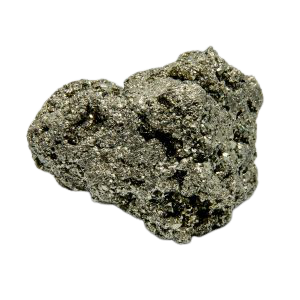
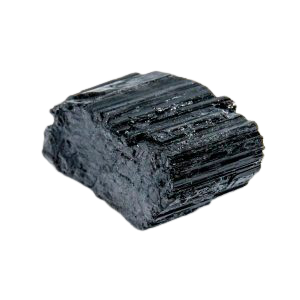

Amatista

$350
Amatista
Esta piedra es una excelente compañía para el momento de meditar. El cuarzo amatista también puede utilizarse para mejorar la concentración, la comprensión y abrir la intuición. También se ha asociado a la disminución del estrés y sentimientos negativos como la ira.
Aventurina
$300
Aventurina
Esta gema tiene muchas propiedades positivas, tanto energéticas como curativas, basadas en culturas milenarias, atribuyéndoles poderes. Se dice que esta piedra atrae la buena fortuna y es excelente para atraer la PROSPERIDAD a tu vida.
Amazonita
$250
Amazonita
Se cree que al llevar el mineral, nos llenaremos de valentía, fortaleza mental y claridad para tomar decisiones importantes. La amazonita es una piedra calmante en episodios de estrés, mejora la creatividad y nos ayuda a expresarnos, a sacar lo que llevamos dentro.
Pirita
$200
Pirita
A nivel físico este mineral protege al cuerpo de enfermedades contagiosas de todo tipo, incluso llegándose a utilizar para disminuir la fiebre y reducir la inflamación, puesto que la pirita aumenta el suministro de oxígeno a la sangre y fortalece los sistemas respiratorio y circulatorio. Tambien es considerada el principal amuleto por excelencia del dinero.
Turmalina Negra
$410
Turmalina Negra
La turmalina negra se considera una piedra de referencia para la limpieza, la protección y la transformación. Absorbe las energías densas y las dirige hacia la tierra para ser transmutadas. Se recomienda utilizarla en su forma natural de cristalización y en posición vertical.
Citrino
$650
Citrino
El cuarzo citrino se asocia al 3º y 7º chakra. Representa la fuerza solar y está relacionado con la creatividad y la prosperidad, con lo que suele usarse para activar y emprender ideas y proyectos. Favorece la asimilación, tanto a nivel físico y nutritivo como a nivel emocional y espiritual.